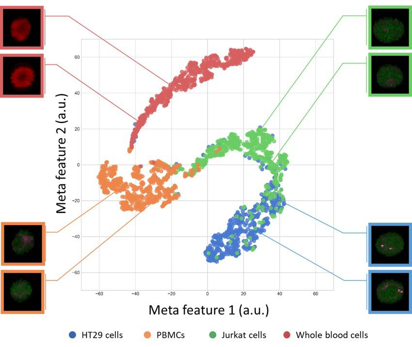
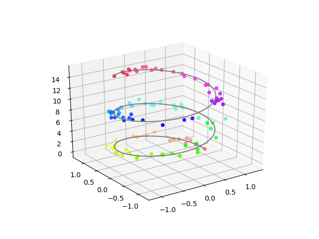
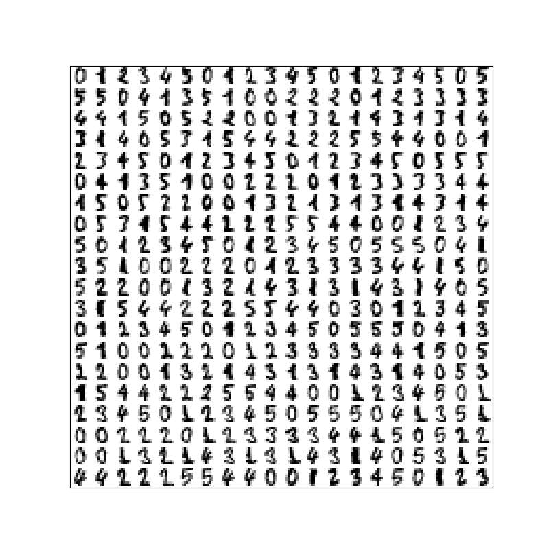
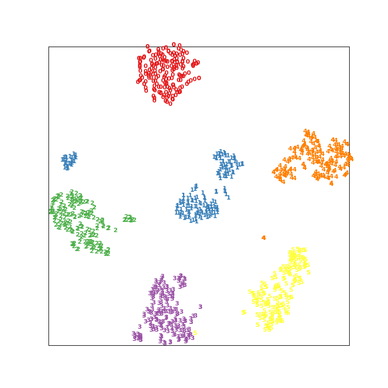
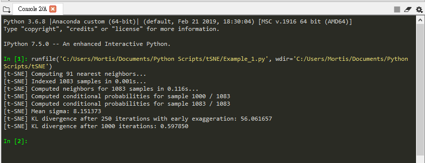
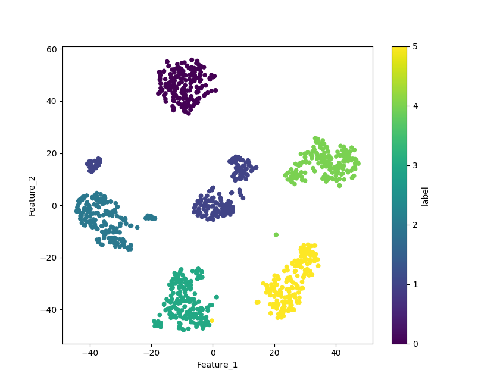

Python – 如何使用 t-SNE 進行降維¶
這是我在日本做的研究內容，試圖透過 t-SNE來檢視分類器中的分類依據。
首先，要先釐清楚目的是什麼，重點應該擺在「如何使用」，而不是t-SNE怎麼來的、背後的數學模型、演進等。
我在一年多前在Medium上寫了一篇Deep Learning (5)-如何有效地使用 t-SNE，介紹了一下t-SNE，那篇文章主要是翻譯這個網站裡的內容：How to Use t-SNE Effectively
t-SNE 是什麼?¶
t-Distributed Stochastic Neighbor Embedding (t-SNE) ，簡單來說是一種「降維」的計算方法。
為什麼我們需要降維? 因為人類很廢阿，我們是三維生物 ，對於高維的存在以及資訊是無法直接感知的。而我們又很喜歡「眼見為憑」，所以需要各種資料視覺化的手法來幫助我們這些廢物人類來去解讀資訊。
在2D名片上畫出資料點在3D空間的分布。 (也有人稱之為投影 )
現在有一個點，有他在X軸、Y軸、Z軸上的資料，那我們可以在一個三維空間中描述他，但如果再更多呢? 當然我們還有顏色可以用，那再高一點? 這個時候我們就無法直接把所有資訊用一張圖表示。
(無法作圖，就代表不能發表、沒有辦法寫計畫、不能去要經費，很可怕。)
回到t-SNE上，是一種 非線性的機器學習降維方法 ，由 Laurens van der Maaten 和 Geoffrey Hinton 於 2008 年提出，由於 t-SNE 降維時保持局部結構的能力十分傑出，因此成為近年來學術論文與模型比賽中資料視覺化的常客，它非常靈活，並且經常可以找到其他降維算法所不能的結構。
簡單的介紹到這邊，想看更細節的可以參考以下中文相關介紹文章：
- 資料降維與視覺化：t-SNE 理論與應用
- Learning Model : Unsupervised Machine Learning_t-SNE參數講解
- 淺談降維方法中的 PCA 與 t-SNE
- 機器學習馬拉松 061 降維方法 t-SNE
- 資料科學/機器學習的好用入門工具 t-SNE 幫你看見高維度數值資料
在Python上使用t-SNE¶
廢話不多說，直接上程式碼：
1 2 3 4 5 6 7 8 9 10 11 12 13 14 15 16 17 18 19 20 21 22 23 24 25 26 27 28 29 30 31 32 33 | |
執行完之後應該會出現兩張圖：
第一張圖，我們所扔進去的手寫數字資料集。 直接把 上面的資料 透過 t-SNE 進行降維的結果。
接下來讓我們來講解一下這裡面發生了什麼事吧。
首先，我們使用的 tSNE 是 sklearn 這個Library 裡面所提供的，詳細的頁面在這裡：點我
裡面我們可以看到一個表，講解了在TSNE()這個函數裡各個參數所代表的意義。
如果你仔細看的話，會發現一件很有趣的事情，所有的參數都是選填。
換句話說，今天你程式碼打成這樣也可以：X_tsne = manifold.TSNE().fit_transform(X)
不過不同的perplexity會有不同的結果，如下圖：
 最左邊是本來的分布，右邊是經過不同perplexity的t-SNE降維過後的結果。
最左邊是本來的分布，右邊是經過不同perplexity的t-SNE降維過後的結果。
相信你不會去看的，我挑幾個比較重要的講給你聽。
- n_components：你想要降成幾維，一維填1、二維填2、三維填3，沒有別的選擇了。
- perplexity：你的資料量越大，就越大。預設是30，建議值是5-50，但你可以不要採納。
- n_iter：你想要迭代的次數，預設是1000。
- init：最初投影，兩個選擇 “random” 或是 “pca” (t-SNE裡面有PCA噢!)
- verbose：要不要看訓練過程，打開的話會在console裡看到這樣的畫面
 verbose =1 * random_state：控制隨機數的生成，你們知道 電腦裡的隨機其實並不隨機 對吧? * method：不用改，除非你的數據量很小，才改成 “exact”
在撰寫程式碼時， Shape 是最常出錯的。所以要注意把 X 整理成TSNE.fit_transform()這個函數吃得下去的樣子。
在範例中，我們從 sklearn 中的dataset 把手寫數字這組資料庫抓出來。
很幸運的，我們X一開始的形狀就是可以直接餵進去的 (1083,64)。
(1083,64) ：1083 代表我們有這麼多資料點，64代表一個資料有64維資訊。
所以我們再看到最後X_tsne這個變數的形狀：(1083,2)，這表示我們把64維降到2維了。
這邊聰明的你應該發現了，如果只是要做降維這件事，我們的程式碼其實只需要長這樣即可：
1 2 3 4 | |
剩下的都是畫圖用。
最後有幾個重點要講：¶
- t-SNE 的隨機性：每次執行跑出來的結果都是不一樣的，不像PCA。
- t-SNE 的解釋性：比較兩堆的大小、距離是沒有意義的。
剩下的就去看我之前的文章，這篇文章重點是Python不是t-SNE。
傳送門：點我
題外話：用Pandas整理數據，快速出圖¶
1 2 3 4 5 | |
在原本的程式碼下面使用上面提供的程式碼，可以得到下面這個圖：
資料呈現的方法百百種，挑選自己喜歡的。
凡本网注明"来源：XXX "的文/图/视频等稿件，本网转载出于传递更多信息之目的，并不意味着赞同其观点或证实其内容的真实性。如涉及作品内容、版权和其它问题，请与本网联系，我们将在第一时间删除内容！
作者:
来源： https://mortis.tech/2019/11/program_note/664/